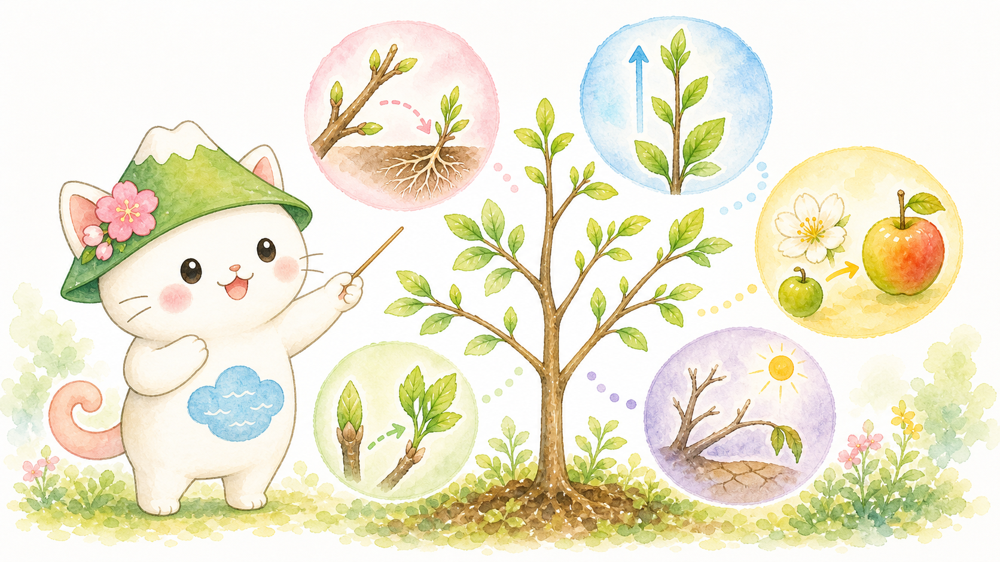
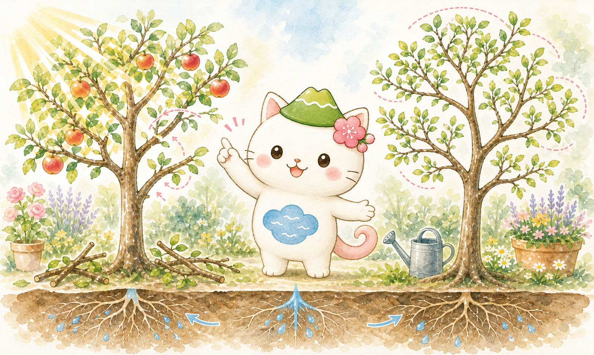

難しい言葉を減らす
専門用語は必要最小限にして、園芸の現場で見える反応に置き換えて説明します。

専門用語は必要最小限にして、園芸の現場で見える反応に置き換えて説明します。
実をならせる木と、姿を楽しむ木の違いが分かるように整理します。
「どこを切るか」だけでなく、「切ったあと木がどう反応するか」を重視します。
いちばん分かりやすい言い方をすると、植物ホルモンは「植物の中を流れる合図」です。 その合図によって、芽が動く、枝が伸びる、花が咲く、実が熟す、乾燥から身を守る、といった反応が切り替わります。
1つのホルモンだけで全てが決まるわけではありません。複数の合図が重なり合い、 光、温度、水分、肥料の効き方も加わって、最終的な反応が決まります。
ホルモンそのものは見えませんが、芽吹き方、新梢の伸び方、葉色、落葉、落果、枝数の出方として表に出ます。 園芸では、その現れ方を読むのが実用的です。
枝先を切れば枝先から出ていた合図が弱まり、休んでいた芽が動きやすくなります。 つまり剪定は、形を整えるだけでなく、木の内部のバランスを変える行為でもあります。
読み方のコツ
初心者のうちは「このホルモンが絶対にこう働く」と覚えるより、 「この場面ではこの合図が強そうだ」と考える方が実際の木を見やすくなります。
学校の生物では名前だけで終わりがちですが、園芸では「どんな場面でその働きが見えるか」までつながると理解しやすくなります。 まずは全体の見取り図を見て、そのあと1つずつ整理します。

主に若い芽や若葉、育ちつつある種や果実で作られやすく、細胞を伸ばしたり、枝先を優先して伸ばしたりします。
園芸で見えやすいのは、頂芽優勢と発根です。枝先が元気だと脇芽が休みやすく、先端を切ると近くの芽が動きやすくなります。
管理に生かすなら 枝数を増やしたい若木では切り戻しが効きやすく、挿し木では発根促進の考え方につながります。
若い葉や茎の先、発芽中の種、育っている果実で働きやすく、茎や新梢を伸ばし、休眠からの立ち上がりにも関わります。
園芸で見えやすいのは、勢いよく伸びる新梢や、発芽の動きです。木が強く伸びる年は、この系統の働きが目立ちやすくなります。
管理に生かすなら 強剪定や窒素過多のあとに徒長枝が増えたときは、木が伸びる方向へ偏っていないかを疑います。
根の先でよく作られ、地上部へ上がってきて、細胞分裂や芽の成長、葉の若さの維持を助けます。
根がよく働いている木は、芽吹きが安定しやすく、脇芽も動きやすくなります。逆に根が弱ると、この後押しが落ちます。
管理に生かすなら 剪定だけでなく、根の量、土の通気、水はけ、植え替え後の回復も一緒に見る必要があります。
成熟しつつある果実、老化した葉、傷んだ組織、ストレスを受けた部分で出やすい気体ホルモンです。
果実の色づきや追熟、落葉、落果、傷みの広がりと関係が深く、環境の急変や病虫害でも増えやすくなります。
管理に生かすなら 収穫遅れ、強い乾燥、根傷みのあとに急な落果や葉落ちが起きたときの見方に使えます。
葉や根などで作られ、乾燥や寒さなどのストレス時に働きやすく、気孔を閉じて水を守り、休眠にも関わります。
しおれる前から光合成を抑え、成長を止める方向へ働くため、見た目より早く木の勢いが落ちていることがあります。
管理に生かすなら 夏の水切れ、移植後、根詰まり後に「まず水と根を立て直す」判断の裏付けになります。
実際の木では、ホルモンは単独よりも組み合わせで効きます。剪定や管理に役立つ関係だけ先に覚えておくと、現場で迷いにくくなります。
枝先から来るオーキシンが強いと、脇芽は休みやすくなります。いっぽう根から来るサイトカイニンは、芽を動かす後押しをします。
だから先端を切ると、枝先の優先が弱まり、脇芽が出やすくなります。若木の枝づくりで切り戻しが効く理由はここです。
ジベレリンは「伸びる」「動き出す」側、アブシシン酸は「休む」「守る」側と考えると分かりやすくなります。
春先の立ち上がりと、夏の乾燥や冬の休眠では、木がどちらへ傾いているかを見ると管理判断がしやすくなります。
葉や果実に送られるオーキシンが弱くなると、離れやすい層ができやすくなり、そこへエチレンが重なると落葉や落果が進みます。
収穫遅れ、乾燥、根傷み、強いストレスのあとに急に落ち始める現象は、この見方で整理しやすくなります。
根が元気なら、サイトカイニンなどの後押しが地上部へ届きやすくなります。逆に根が弱ると、剪定で形だけ整えても反応は鈍くなります。
芽吹き不良や葉の小型化を見たら、まず根・水・土を疑う。この順番が、無理な切り足しを防ぎます。
案内役メモ
「枝を切ったのに思ったように芽が出ない」「逆に暴れた」というときは、 切り方だけでなく、木の勢い、根の量、水分、前年の実つきまで一緒に見ないと答えがずれます。
ホルモンを知ると、剪定を「切る技術」だけでなく「切ったあとに木がどう反応するかを予測する技術」として見られるようになります。 ここでは果樹と庭木の両方に使いやすい考え方を、場面別に整理します。

果樹でも庭木でも、骨格を作る時期は軽い切り戻しが有効です。先端を切るとオーキシンの優先が弱まり、近くの芽が動きやすくなります。
ただし一気に短くし過ぎると、勢いの強い徒長枝だけが増えることがあります。1回で作り切ろうとせず、数年かけて枝を配る方が安定します。
成木の果樹は、枝数を増やすより「中まで光が入るか」を重視します。外側だけ切り詰めるより、込み合う枝を元から抜く間引き剪定の方が理にかないます。
間引きはホルモン刺激が局所に集中しにくく、強い吹き返しを抑えやすい切り方です。結実枝を残しながら風通しを作る意識が重要です。
庭木は「実をならせる」より「枝ぶりや葉姿を見せる」目的が大きいため、外周を一律に刈り込むより、不要枝を分岐点で抜く方が自然です。
外側ばかり細かく切ると、先端近くに芽が集中して表面だけ茂り、内部が暗くなります。これはホルモンの偏りが表面側で続くためです。
強剪定のあとに太く長い新梢が一斉に出るなら、木が「伸びる側」に強く傾いています。ジベレリン的な伸長反応と、根からの後押しが出過ぎている状態です。
次回は切り戻し量を減らし、太い枝を抜く間引き主体へ寄せます。施肥、とくに窒素が強すぎないかも一緒に見直します。
芽吹きが悪い、葉が小さい、葉先が焼ける、枝先が枯れ込むといった症状では、まず根傷み、過湿、乾燥、根詰まりを疑います。
根が弱るとサイトカイニンの後押しが落ち、乾燥でアブシシン酸が増えるため、強く切っても回復しにくくなります。回復期は軽い整理にとどめる方が安全です。
色づき、追熟、自然落果にはエチレンが深く関わります。熟し過ぎた果実や傷んだ果実を放置すると、周囲も一気に進みやすくなります。
果樹管理では「収穫適期を逃さない」「乾燥や根傷みを重ねない」ことが、品質維持と落果防止の両面で重要です。
| 場面 | 果樹で考えること | 庭木で考えること | ホルモンの見方 |
|---|---|---|---|
| 枝数を増やしたい | 若木の骨格づくりで、軽い切り戻しを使う | 更新したい枝だけ限定的に切る | 先端優勢が弱まり、脇芽が動きやすくなる |
| 木が込み合っている | 結実枝を見ながら間引いて光を入れる | 枝の流れを見て不要枝を元から抜く | 間引きは局所刺激が小さく、暴れにくい |
| 徒長枝が多い | 強い冬剪定や窒素過多を見直す | 外周だけの刈り込みを減らす | 伸長成長側の反応が強すぎる |
| 木が弱っている | 着果負担を減らし、吸水と根の回復を優先する | 軽い整理で止め、活着と回復を待つ | アブシシン酸増加、サイトカイニン低下を疑う |
剪定の良し悪しは、その場でなく数週間から数か月後の反応に出ます。 次のような見え方を知っておくと、翌年の切り方や水管理を修正しやすくなります。
太く立った枝が一斉に出るなら、切り戻しが強すぎた可能性があります。次回は間引き割合を増やし、外周だけを短くする切り方を減らします。
切り方だけでなく、根傷み、水切れ、日照不足、前年の着果負担を疑います。ホルモン以前に、木全体の体力差が大きいことがあります。
栄養成長に偏っている可能性があります。果樹では光不足、強剪定、窒素過多が重なっていないかを確認します。
乾燥、根傷み、過湿、病虫害、移植ストレスなどでエチレンやアブシシン酸が増えているかもしれません。強い追い剪定は避けます。
庭木でよくある反応です。表面だけ細かく切る管理を続けると、先端側に反応が集中し、内部へ光が入らなくなります。
土は乾いていないように見えても、実際には吸水が追いついていないことがあります。アブシシン酸が先に働くので、しおれる前から成長は鈍ります。
植物ホルモンの理解は、季節ごとの具体的な剪定作業に結びつけると定着しやすくなります。
基本作用は植物生理学の総説と教科書的資料、果樹・庭木の管理は大学 Extension 資料を中心に整理しています。